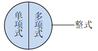

专题3.2 整式（举一反三讲义）
【北师大版2024】

【题型1 单项式的定义】 2
【题型2 单项式的系数、次数】 2
【题型3 判断多项式】 3
【题型4 判断多项式的项与次数】 3
【题型5 由多项式的系数、次数求字母的值】 3
【题型6 整式的判断】 4
【题型7 将多项式按某个字的升幂或降幂排列】 4
【题型8 整式中的规律探究】 5

知识点1 单项式
1.定义：如果一个代数式是数或字母的积，那么这个代数式叫作单项式．单独的一个数或一个字母也是单项式．
2.单项式的系数：单项式中的数字因数叫作这个单项式的系数．
3.单项式的次数：一个单项式中，所有字母的指数的和叫作这个单项式的次数．对于一个非零的数，规定它的次数为0．

知识点2 多项式
1.定义：几个单项式的和叫作多项式．
2.多项式的项：在多项式中，每个单项式叫作多项式的项，其中不含字母的项叫作常数项，一个多项式含有几项，就叫几项式．
3.多项式的次数：多项式里，次数最高的项的次数，叫作这个多项式的次数．
知识点3 整式
1.定义：单项式与多项式统称整式．
2.单项式、多项式与整式的关系如图所示．

3. 判断整式、单项式及多项式的方法
（1）单项式不含加减运算，多项式必含加减运算；
（2）多项式是几个单项式的和，多项式不包含单项式；
（3）单项式和多项式都是整式，分母中含有字母的都不是整式．
【题型1 单项式的定义】
【例1】（24-25七年级上·河北邯郸·期末）下列代数式8，a2+2,−x2y,3a2,0,b,x−12中，单项式的个数有（ ）
A．3个 B．4个 C．5个 D．6个
【变式1-1】（24-25七年级上·福建福州·期末）下列代数式中，属于单项式的是（ ）
A．x6 B．st C．3x+2y D．x+12
【变式1-2】（24-25七年级下·江苏苏州·阶段练习）在①14x，②a2−b2，③20%x，④4+8=12，⑤m−n3，⑥1a中，属于单项式的有 ．
【变式1-3】（24-25七年级上·广东肇庆·期中）下列代数式：①23；②m；③34xy2；④2x+3y3；⑤abm；⑥6x+3y；⑦xπ，其中是单项式的是 （只填序号）．
【题型2 单项式的系数、次数】
【例2】（24-25七年级上·吉林·期中）已知一个单项式的系数是3，次数是4，则这个单项式可以是（ ）
A．3xy2 B．−3x4 C．3x2+y D．3x3y
【变式2-1】（24-25七年级上·北京房山·期末）下列式子：−m,0,(−1)2xyz,2πR,−a3,x3,1x中，单项式共有 个；系数为1的单项式是 ；系数为−1的单项式是 ；单项式(−1)2xyz的次数是 ．
【变式2-2】（24-25七年级上·湖北荆门·期中）若一个单项式同时满足条件：①含有字母x，y，z；②系数为−3；③次数为5，则这样的单项式共有（ ）
A．5个 B．6个 C．7个 D．8个
【变式2-3】（24-25七年级下·湖南长沙·开学考试）①单项式−π2x22的系数是−12；②ab的次数、系数都是1；③34与4a都是单项式；④单项式的2πr系数是2π．以上说法中正确的有（ ）
A．0个 B．1个 C．2个 D．3个
【题型3 判断多项式】
【例3】（24-25七年级上·广东河源·期末）在代数式−1,2x+7,−x+y2π,xx+1,m+n2中，多项式的个数是（ ）个
A．5 B．4 C．3 D．2
【变式3-1】在代数式①x2y；②a2−ab+1b;③3n，④12x+1中，下列判断正确的是（ ）
A．①③是单项式 B．②是二次三项式 C．②④是多项式 D．①④是整式
【变式3-2】下列说法正确的是（ ）
A．a，−6，ab+c，2x−13都是整式 B．x+y2和xy2都是单项式
C．y+1y和x2+xy+y2都是多项式 D．3x−1的项是3x和1
【变式3-3】下列整式﹣12x2y，m4n27，x2+y2﹣1，﹣5，x，2﹣y中有a个单项式，b个多项式，则ab＝ ．
【题型4 判断多项式的项与次数】
【例4】（24-25七年级上·四川南充·期中）12x2y3−xy2+xy−3的次数是a，常数项是b，则ab的值是 ．
【变式4-1】（24-25六年级下·上海·期中）下列多项式中是三次三项式的是（ ）
A．3x2； B．x2y−3y−1； C．xy−3+2xy； D．x+xy−3y．
【变式4-2】（24-25七年级上·河北邢台·阶段练习）−2a3b+15ab−b3+4的最高次项是 ．
【变式4-3】（24-25七年级上·上海宝山·期中）多项式3ab−2ab2+310的最高次项是 ．
【题型5 由多项式的系数、次数求字母的值】
【例5】如果多项式5am−n−1a+1是关于a的二次二项式，m+2n= ．
【变式5-1】（24-25七年级上·天津·期末）已知关于x的多项式m−4x3−xn+x−mn为二次三项式，则当x=−1时，这个二次三项式的值是 ．
【变式5-2】已知a+10x3+cx2−2x+5是关于x的二次多项式，且实数a，b，c满足c−182=−a+b，则a−b+c= ．
【变式5-3】（24-25七年级上·四川南充·期中）关于x 的多项式 axa+4−x5+3x3−5的次数为3，a为何值（ ）
A．0 B．1 C．−1 D．±1
【题型6 整式的判断】
【例6】下列式子：x2+2，1a+4，3ab27，abc，5x，0中，整式的个数是（ ）
A．3 B．4 C．5 D．6
【变式6-1】下列式子：①x2−x+1；②m2n+mn−1；③x4+1x+2；④5−x2；⑤−x2．其中多项式有 个，次数最高的多项式为 （请填写序号），整式有 个．
【变式6-2】代数式2x−y、m、x2−xy、0、−ab2、1x、a3+b、2(a+b)、|−0.5|、xa+y中，单项式有 个，多项式有 个，整式有 个．
【变式6-3】观察下列各式：−ab，−a2，2a，a+b，a2+a−1．回答下列问题：
(1)单项式分别为：______________________________；
(2)多项式分别为：_________________________________；
(3)整式有___________个；
(4)−ab的系数为__________；
(5)次数最高的多项式为__________________．
【题型7 将多项式按某个字的升幂或降幂排列】
【例7】（24-25七年级上·上海普陀·期末）将整式3x7y−4xm+1y4+2xmy2+x3y6按y降幂排列后，第二项的系数为 ．
【变式7-1】（24-25七年级上·上海闵行·阶段练习）多项式3-2xy+6x2y-5x3y2-4x4y是按照( ).
A．按字母x升幂排列 B．按字母y升幂排列
C．按字母x降幂排列 D．按字母y降幂排列
【变式7-2】（2025·河南郑州·一模）写出一个同时满足下列条件的二次三项式：
①只含有字母a和b；②每一项的次数都是2；③按字母a的降幂排列．
【变式7-3】（24-25七年级上·上海杨浦·阶段练习）某多项式为x8−x7y+x6y2−x5y3+⋯，按这样的规律写下去，第6项是 ，此多项式应是 次 项式．
【题型8 整式中的规律探究】
【例8】（24-25八年级下·云南昭通·期中）观察下列式子：
x−1，x2+4，x3−9，x4+16，…
请你找出其中规律，并将第n个式子写出来： ．
【变式8-1】（24-25七年级上·云南昭通·期中）按照一定规律排列的单项式x2，x34，x56，x78，…，试猜想第n个单项式为（ ）
A．x2n+1n B．x2n+12n C．x2n−12n D．x2n−12n+1
【变式8-2】（2025·上海·七年级期末）按一定规律排列的整式：x+y2，x3+y4，x5+y6，x7+y8，x9+y10，…，第n个多项式是（ ）
A．x2n+y2n−1 B．x2n+1+y2n C．x2n−1+yn+1 D．x2n−1+y2n
【变式8-3】（24-25七年级上·北京西城·期中）按一定规律排列的一组多项式：a+b2，3a−b3，5a+b4，7a−b5，9a+b6，…，它的第2024个多项式是（ ）
A．4047a+b2025 B．4047a−b2025 C．4049a+b2025 D．4049a−b2025